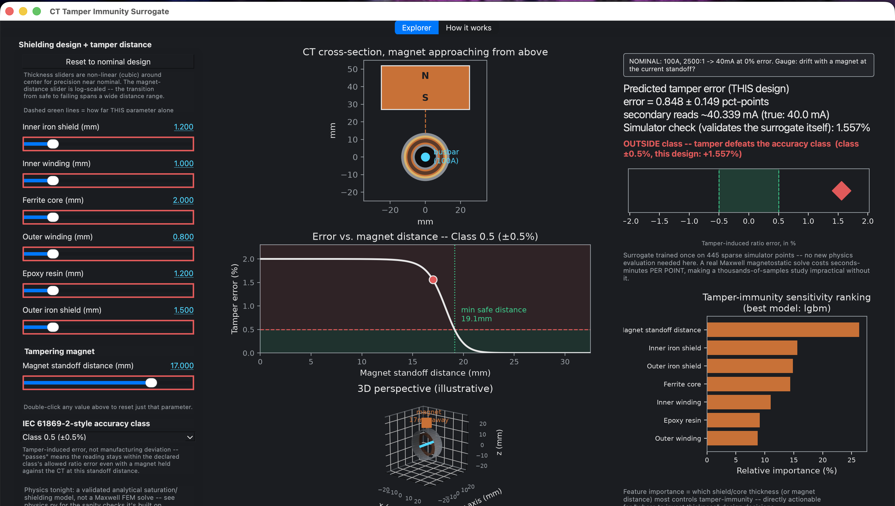

Background
Revenue-metering current transformers are a known fraud target: holding a strong permanent magnet against a CT can locally saturate its iron shielding and ferrite core, making the meter under-read. IEC 61869 defines accuracy classes, but doesn't directly answer, for a specific shield/core design, how close a magnet needs to get before the reading drifts outside that class. This project applies the same DoE-plus-surrogate approach as my meander antenna project to a very different physics domain — magnetostatic tamper security instead of RF.
Approach
I derived a real, disclosed 4-stage closed-form model: a two-charge-sheet block-magnet field (accurate at near-field distances, unlike a simpler point-dipole approximation) feeding a thin-shell iron shielding calculation applied through both an inner and outer iron layer, then generalized Fröhlich saturation with a tunable sharpness exponent, then a ratio-error term proportional to the resulting ferrite permeability collapse. I self-validated the physics chain before trusting any downstream fit — far field must give exactly 0% error, error must strictly decrease with magnet distance, a thicker shield must reduce error at fixed distance — then ran a 512-point scrambled-Sobol design of experiments across 7 parameters (6 shield/core/winding thicknesses plus magnet standoff distance, log-sampled so DoE density concentrates near the real transition zone). FLAML AutoML picked the winning model family (LightGBM), wrapped in a 25-member bootstrap ensemble for calibrated uncertainty.

Process
The calibration constants weren't taken from a datasheet in isolation. Magnet strength and saturation sharpness were jointly retuned against two real bench measurements (tamper onset around 21mm, near-full-distortion around 13mm) — the magnet's literal N45–N52 datasheet magnetization figure (1.1M A/m) produced a transition far too wide and too far out when used directly, so the effective calibrated value (18,000 A/m) is disclosed in the code as a fitted effective constant reproducing the observed near-field falloff, explicitly not a literal magnet property. The ensemble's uncertainty was checked against real held-out coverage rather than assumed: raw 1-sigma coverage measured 98.5% (badly over-confident), needing an aggressive calibration factor (0.29) to hit the true 68.27% target.
Results
- Held-out relative RMSE of 2.37% (LightGBM, chosen by AutoML over competing model families).
- A live desktop app lets you drag shield-layer thicknesses and magnet standoff distance and instantly see whether a design stays inside its declared IEC accuracy class under a tampering attempt — a study that would otherwise mean a Maxwell FEM solve per point.
- Feature-importance ranking makes the shielding trade-off actionable: magnet standoff distance and inner/outer iron shield thickness dominate sensitivity, and the six shield layers matter more balanced together than any single one alone.
- Disclosed model limitation: the shielding formula uses the standard infinite-cylinder approximation. The real CT is short and capped, so end leakage through the iron caps isn't captured — exactly what a full Ansys Maxwell model would add next.
Live demo
Screen recording of the packaged app: adjusting shield thicknesses and magnet standoff distance and watching the predicted tamper error respond in real time.